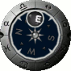
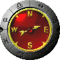
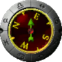
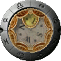

Compass - Round - Face
These options allow you to chose the background for the round compass.
Style 01
The background of the face for this style is solid. The bubble on this compass is fixed and will always be at the top. The face of the compass will spin so the direction you are currently traveling will be visible inside the bubble.

Style 02
The background of the face for this style is transparent. The bubble on this compass is fixed and will always be at the top. The face of the compass will spin so the direction you are currently traveling will be visible inside the bubble.

Style 03
The face of this compass is fixed and north will always be at the top. The arrow on the compass will spin to point in the direction you are currently traveling.

Style 04
The arrow on this compass is fixed and will always point to the top. The face of the compass will spin so the direction you are currently traveling will be shown beneath the arrow.

Style 05
The background of the face for this style is solid. The bubble on this compass is fixed and will always be at the top. The face of the compass will spin so the direction you are currently traveling will be visible inside the bubble.

Note: Each of the compass images above indicate the direction of travel is East with a slight drift to the North.